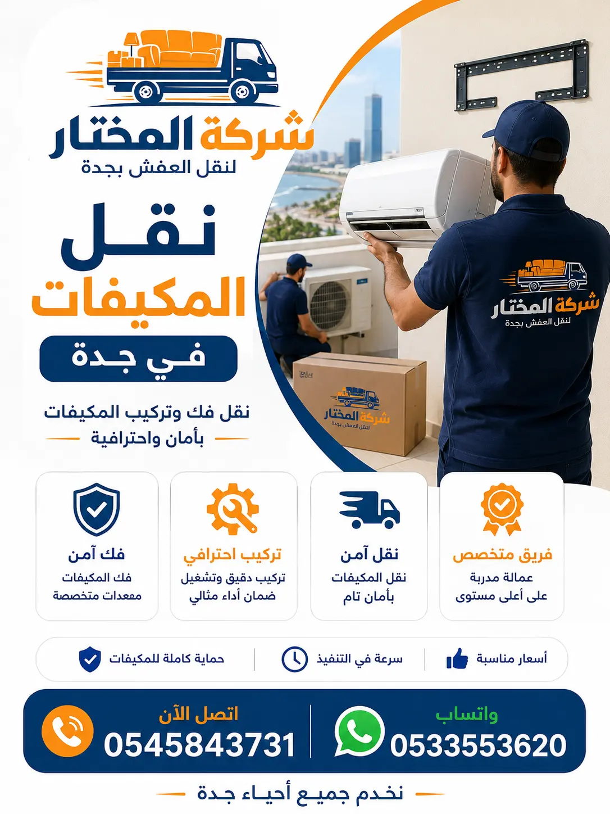

أفضل شركة نقل مكيفات بجدة بأسعار مناسبة وخدمات متميزة 2026
تعتبر شركة نقل مكيفات بجدة هي الرائدة في تقديم خدمات فك وتركيب وتغليف ونقل المكيفات بجميع أنواعها. نحن ندرك أن المكيفات من الأجهزة الأساسية في المنازل والمكاتب بمدينة جدة ذات المناخ الحار، وتتطلب عناية خاصة أثناء النقل نظراً لاحتوائها على قطع حساسة مثل الضواغط والمبخرات والمواسير النحاسية التي قد تتلف بسهولة. لهذا السبب، تم تجهيز فريقنا بأحدث الأدوات والتقنيات لضمان فك وتركيب مكيفك بأمان تام، مع الحفاظ على كفاءة التبريد بعد النقل.
ما الذي يجعلنا أفضل شركة نقل مكيفات بجدة؟ أولاً، خبرتنا الطويلة التي تتجاوز 15 عاماً في مجال نقل المكيفات والأجهزة الكهربائية. ثانياً، فريق متخصص من فنيي التبريد والتكييف المدربين على فك وتركيب جميع أنواع المكيفات (سبليت، شباك، أرضي، مركزي، ودكت). ثالثاً، نستخدم أحدث سيارات نقل العفش في جدة المجهزة بأنظمة تثبيت خاصة للمكيفات لحمايتها من الاهتزازات أثناء النقل. رابعاً، نقدم ضماناً شاملاً على سلامة المكيف بعد النقل، ونقوم بفحص تشغيل المكيف بعد التركيب للتأكد من عمله بكفاءة.
بغض النظر عن حجم مكيفك أو نوعه، فإن فريقنا قادر على نقله بكل سلاسة. سواء كنت بحاجة إلى نقل مكيف سبليت من غرفة إلى أخرى أو نقل نظام تكييف مركزي كامل لفيلا، فإن خدمة نقل المكيفات لدينا هي الحل الأمثل. نحن نستخدم أجهزة شفط الغاز للحفاظ على كمية الفريون، ونقوم بتفريغ النظام من الغاز بشكل آمن قبل الفك، ثم إعادة شحنه بعد التركيب، لضمان الحفاظ على كفاءة التبريد وعدم فقدان غاز التبريد الثمين.

خدمات نقل المكيفات داخل جدة | تغطية شاملة لجميع الأحياء

نقدم خدمات نقل المكيفات داخل جدة والتي تشمل جميع أحياء جدة شمالاً وجنوباً وشرقاً وغرباً. سواء كنت تقيم في حي الحمدانية، أو حي الشاطئ، أو النخيل، أو الصفا، فإن فريقنا جاهز للوصول إليك خلال 30 دقيقة. نعرف طرق جدة جيداً ونتعامل مع الازدحامات المرورية بذكاء لضمان وصول مكيفك في الوقت المحدد، مع الحفاظ على سلامته.
تتميز خدمة نقل المكيفات داخل جدة باستخدام سيارات مجهزة بأنظمة تثبيت خاصة تمنع انزلاق المكيفات الثقيلة مثل المكيفات الأرضية والمركزية. فريق العمل لدينا يتكون من فنيين متخصصين في فك وتركيب المكيفات في جدة، بالإضافة إلى عمال تغليف محترفين يستخدمون أفضل مواد الحماية. نقوم بتفريغ غاز التبريد بشكل آمن، وفك المواسير النحاسية بعناية، وتغليف الوحدات الداخلية والخارجية بمواد عازلة، ثم نقلها إلى الموقع الجديد.
خدماتنا تشمل أيضاً نقل مكيفات الفلل والمنازل في جدة بنفس المستوى من الجودة والاحترافية. نحن نقدم خدمة نقل على مدار الساعة، مما يعني أننا متاحون للعمل في أي وقت، حتى في أيام العطلات الرسمية، لأننا ندرك أن الحاجة إلى التكييف في جدة لا تتوقف. كما نقدم خدمة طارئة لنقل المكيفات في حالات الطوارئ مثل التسريبات أو الأعطال المفاجئة التي تتطلب نقل المكيف إلى ورشة الصيانة.
فك وتركيب المكيفات بواسطة فنيين محترفين في جدة
نقدم في شركة المختار خدمة فك وتركيب المكيفات على أعلى مستوى من الاحترافية بواسطة فريق من فني فك وتركيب مكيفات مدربين ولديهم خبرة تزيد عن 10 سنوات في مجال التبريد والتكييف. نقوم بفك وتركيب جميع أنواع المكيفات بكل دقة، بدءاً من فك الوحدات الداخلية والخارجية، وصولاً إلى فصل المواسير النحاسية والأسلاك الكهربائية، مع وضع علامات تعريفية لتسهيل عملية إعادة التركيب.
عند التعاقد معنا لخدمة فك وتركيب المكيفات في جدة، نقوم أولاً بفحص المكيف لتحديد نوع الغاز وكميته، ثم نقوم بشفط الغاز باستخدام أجهزة خاصة وتخزينه في أسطوانات معقمة. بعد ذلك، نفصل المواسير النحاسية بعناية باستخدام أدوات لحام متخصصة، ونغلق الأطراف لحمايتها من الأتربة والرطوبة. نقوم بتفكيك الوحدة الداخلية من الحائط، وفك الوحدة الخارجية من مكانها، مع الحفاظ على جميع البراغي والقطع الصغيرة في أكياس مخصصة.
بعد الوصول إلى الوجهة الجديدة، يقوم الفريق بتركيب المكيف في المكان المحدد، مع التأكد من استواء الوحدتين، وتوصيل المواسير النحاسية بإحكام، وتوصيل الأسلاك الكهربائية بشكل صحيح، ثم إعادة شحن غاز التبريد، وفحص ضغط النظام، والتأكد من عدم وجود تسريبات، واختبار تشغيل المكيف للتأكد من كفاءته. فني فك وتركيب مكيفات لدينا يستخدم أحدث المعدات مثل مضخات التفريغ، ومقاييس الضغط، وأجهزة كشف التسرب الإلكترونية، وأجهزة قياس درجة الحرارة. ننهي فك مكيف سبليت في غضون ساعة، وتركيبه في نفس المدة تقريباً، بينما تستغرق المكيفات المركزية وقتاً أطول حسب حجم النظام. كما نقدم ضماناً على أعمال الفك والتركيب لمدة شهر كامل.
أنواع المكيفات التي ننقلها | خبرة في جميع الأنظمة والماركات
المكيفات سبليت
نقوم بنقل المكيفات سبليت (الوحدتين الداخلية والخارجية) بكل احترافية، مع شفط الغاز وفك المواسير النحاسية والأسلاك الكهربائية، وإعادة التركيب في الموقع الجديد مع ضمان كفاءة التبريد.
المكيفات شباك
نمتلك خبرة في نقل مكيفات الشباك الثقيلة، مع تفكيكها من مكانها وتغليفها جيداً ونقلها إلى الموقع الجديد، مع تركيبها في فتحة الشباك وضبطها بشكل محكم لمنع تسرب الهواء.
المكيفات الأرضية
ننقل المكيفات الأرضية الكبيرة، التي قد تزن أكثر من 100 كجم، باستخدام رافعات يدوية وعربات مخصصة، مع فك المواسير والأسلاك وتغليف الوحدات وتركيبها في الموقع الجديد.
المكيفات المركزية والدكت
نتعامل مع أنظمة التكييف المركزية والدكت المعقدة، التي تشمل وحدات داخلية وخارجية كبيرة وشبكات من المواسير والوصلات، مع فك النظام بأكمله وتغليفه ونقله إلى الموقع الجديد وإعادة تركيبه وتشغيله.
جميع أنواع المكيفات يتم التعامل معها بمنتهى الدقة، ونستخدم أدوات خاصة لكل نوع لضمان عدم إتلاف أي جزء. للمزيد من المعلومات حول أفضل الطرق لحماية الأجهزة أثناء النقل، يمكنك قراءة مقالنا أفضل طريقة لنقل الأجهزة الكهربائية.
تغليف المكيفات وحماية الأجهزة | نضمن وصول مكيفك بحالة ممتازة
تعتبر عملية تغليف المكيفات من أهم مراحل نقل المكيفات التي تحدد مدى سلامة الأجزاء عند الوصول إلى الوجهة الجديدة. في شركة المختار، نقدم خدمة تغليف المكيفات وحمايتها بأحدث المواد وأفضل التقنيات. نستخدم البلاستيك الفقاعي المقوى (بثلاث طبقات) لتغليف الوحدات الداخلية والخارجية، وكراتين مزدوجة الجدران لحمل الوحدات الصغيرة، وزوايا بلاستيكية وكرتونية لحماية زوايا المكيفات من الصدمات، وأغطية قماشية سميكة مقاومة للماء لحماية المكيفات من الأتربة والرطوبة أثناء النقل.
نحن ندرك أن المكيفات تحتوي على قطع حساسة مثل المروحة والمبخر والمكثف والضاغط، لذلك نستخدم فوم عازل للصدمات من جميع الجوانب، ونقوم بتثبيت المكيفات في صناديق خشبية مخصصة للرحلات الطويلة. كما نقوم بتغليف المواسير النحاسية والقطع الكهربائية بشكل منفصل، ووضعها في أكياس مخصصة. المواد المستخدمة في تغليف المكيفات لدينا يتم تجديدها باستمرار لتواكب أحدث التقنيات.
تغليف المكيفات مع شركة المختار يعني راحة البال التامة. نحن نضمن أن جميع أجزاء مكيفك ستصل سليمة 100% بفضل جودة مواد التغليف واحترافية فريق العمل. كما نقدم خدمة التغليف في الموقع، حيث نقوم بتغليف المكيفات في منزلك أو مكتبك مباشرة، دون الحاجة إلى نقلها إلى مستودع آخر. يمكنك أيضاً الاطلاع على أفضل طرق تغليف العفش والأجهزة من خلال مدونتنا.
نقل مكيفات الفلل والمنازل في جدة | خدمات متخصصة لنقل أنظمة التكييف الكبيرة
تتميز شركة المختار بتقديم خدمات متخصصة في نقل مكيفات الفلل والمنازل في جدة. نحن ندرك أن الفلل غالباً ما تحتوي على أنظمة تكييف متعددة، قد تشمل مكيفات سبليت في كل غرفة، ونظام تكييف مركزي للمجلس والصالة، ومكيفات شباك في المطابخ والحمامات. لذلك، نخصص فريقاً كبيراً للتعامل مع مكيفات الفلل، يتكون من 4-6 فنيين، ونستخدم أكثر من شاحنة إذا لزم الأمر. خدمة نقل مكيفات الفلل والمنازل في جدة لدينا تشمل كل شيء بدءاً من فك جميع المكيفات وشفط الغاز وتغليفها، وصولاً إلى تركيبها وتشغيلها في الموقع الجديد.
أما بالنسبة لـ نقل مكيفات الشقق، فنحن نقدم حلولاً مرنة تناسب المساحات المحدودة، مع استخدام سيارات بحجم مناسب للشوارع الضيقة في بعض الأحياء القديمة مثل حي البلد وحي الزهراء. نضمن لك فك وتغليف ونقل وتركيب مكيفات شقتك خلال ساعات قليلة فقط، مع الحفاظ على كفاءة التبريد.
سواء كنت بحاجة إلى نقل نظام تكييف مركزي كامل لفيلا، أو نقل مكيفات سبليت متعددة، فإن شركة المختار لديها الخبرة والفريق والعتاد اللازم لإنجاز المهمة بكفاءة عالية. نحن نقدم عروضاً خاصة لنقل مكيفات الفلل والمنازل الكبيرة، ويمكنك الحصول على خصم يصل إلى 25% عند حجز خدمة النقل الشامل. كما نقدم استشارة مجانية حول أفضل أنواع المكيفات لمنزلك الجديد، ونساعدك في اختيار النظام المناسب لمساحتك واحتياجاتك.
نقل مكيفات المكاتب والشركات في جدة | حلول احترافية لسرعة الإنجاز
نقدم في شركة المختار خدمات متخصصة في نقل مكيفات المكاتب والشركات في جدة. مكيفات المكاتب غالباً ما تكون من نوع سبليت أو مركزية، وتتطلب نقلاً سريعاً لتجنب تعطيل العمل، خاصة في فصل الصيف حيث ترتفع درجات الحرارة. خدمة نقل مكيفات المكاتب والشركات لدينا مصممة خصيصاً لتكون سريعة وغير مؤثرة على سير العمل، حيث نعمل خلال عطلة نهاية الأسبوع أو خارج ساعات الدوام الرسمي.
خدمة نقل مكيفات المكاتب والشركات لدينا تشمل: فك جميع المكيفات في المكتب، شفط الغاز بشكل آمن، تغليف الوحدات الداخلية والخارجية، نقلها إلى الموقع الجديد، تركيبها وتشغيلها، مع اختبار كفاءة التبريد لكل مكيف. فريقنا مدرب على التعامل مع مكيفات المكاتب بحذر شديد، مع استخدام أدوات خاصة لنقلها بدون إتلاف، والحفاظ على نظافة المكان من أي أوساخ أو غبار.
نقدم أيضاً خدمة نقل مكيفات المكاتب إلى خارج جدة، مثل نقل مكيفات المكاتب من جدة إلى الرياض ونقل مكيفات المكاتب من جدة إلى الدمام، مع ضمان وصولها بحالة ممتازة وجاهزة للتركيب والتشغيل.
خدمات نقل المكيفات بين المدن | شحن مكيفات آمن لمسافات بعيدة
لا تقتصر خدماتنا على نقل المكيفات داخل جدة، بل نمتد لتشمل نقل المكيفات بين المدن باحترافية وأمان عاليين. نحن نقدم خدمة نقل المكيفات إلى جميع مدن المملكة العربية السعودية، باستخدام شاحنات مخصصة للرحلات الطويلة مجهزة بأنظمة تعليق متطورة تمتص الصدمات، مع أنظمة تثبيت خاصة للمكيفات تمنع تحركها أثناء السير. خدمات نقل المكيفات بين جدة والرياض لدينا تضمن وصول مكيفك بحالة ممتازة حتى لو كانت المسافة كبيرة.
نوفر خدمات نقل المكيفات إلى الرياض، الدمام، مكة، المدينة المنورة، أبها، تبوك، وغيرها من المدن. لكل وجهة نستخدم الفريق المناسب والعتاد المناسب، مع مراعاة طبيعة الطريق والمسافة. في الرحلات الطويلة، نخصص سائقين اثنين للتناوب على القيادة لضمان الوصول في الوقت المحدد وبأمان تام، مع مراقبة درجة حرارة الشاحنة للحفاظ على سلامة المكيفات، خاصة في فصل الصيف. يمكنك الاطلاع على صفحاتنا المخصصة لنقل العفش بين المدن: نقل مكيفات من جدة إلى مكة ونقل مكيفات من جدة إلى المدينة المنورة.
نقل المكيفات بين المدن مع شركة المختار يعني أنك لست مضطراً للقلق بشأن أي شيء. فريقنا يتولى كل شيء بدءاً من الفك والتغليف في جدة، مروراً بالشحن والنقل، وصولاً إلى إعادة التركيب والتشغيل في مكيفك الجديد في أي مدينة أخرى. نحن نقدم عروضاً خاصة للشحنات الكبيرة (أكثر من 5 مكيفات) وللعملاء الدائمين. اتصل بنا لتحصل على عرض سعر دقيق لوجهتك المحددة، مع خصم يصل إلى 20% للشحنات الجماعية.
لماذا نحن أفضل شركة نقل مكيفات جدة؟ | مزايا لا حصر لها
عند مقارنة شركات نقل المكيفات في جدة، ستجد أن شركة المختار تتفوق في عدة جوانب. نحن نقدم نقل مكيفات احترافي بمعايير عالمية. أفضل شركة نقل مكيفات لدينا تتميز بخبرة تزيد عن 15 عاماً، وفريق مدرب على أعلى مستوى من فنيي التبريد والتكييف، وأسطول حديث من السيارات المجهزة بأنظمة تثبيت خاصة للمكيفات، ومواد تغليف عالية الجودة (بلاستيك فقاعي 3 طبقات، فوم عازل، صناديق خشبية)، وأسعار تنافسية تبدأ من 200 ريال، وضمان كامل على الخدمة لمدة 3 أشهر، وتأمين يصل إلى 10,000 ريال ضد أي ضرر نادر.
كما يمكنك قراءة أفضل شركات نقل الأثاث في جدة والمقارنة بينها، وستجد أن شركة المختار تحظى بأعلى التقييمات من العملاء. يمكنك أيضاً الاطلاع على كيف تختار شركة نقل أثاث في جدة ومقارنة بين شركات نقل العفش لتتأكد من أننا نقدم أفضل قيمة مقابل المال. نحن نحرص على تدريب فريقنا باستمرار على أحدث تقنيات التبريد والتكييف، ونواكب التطورات في مجال المكيفات وأنواع الغازات الجديدة، لضمان تقديم خدمة متطورة ومتميزة.
جداول المقارنة | أسعار ومواد وخدمات نقل المكيفات في جدة
جدول 1: مقارنة أسعار نقل المكيفات حسب النوع
| نوع المكيف | شركة المختار | متوسط السوق | التوفير |
|---|---|---|---|
| مكيف سبليت (وحدة واحدة) | 200-300 ريال | 350-500 ريال | توفير 35% |
| مكيف شباك (18,000 وحدة) | 250-350 ريال | 400-550 ريال | توفير 30% |
| مكيف أرضي (24,000 وحدة) | 400-500 ريال | 600-800 ريال | توفير 30% |
| نظام تكييف مركزي (فيلا) | 1,200-2,000 ريال | 1,800-3,000 ريال | توفير 33% |
جدول 2: مقارنة مواد تغليف المكيفات المستخدمة
| المادة | شركة المختار | الشركات الأخرى | الميزة |
|---|---|---|---|
| البلاستيك الفقاعي | 3 طبقات - سمك 10 مم | طبقة واحدة - سمك 3 مم | حماية فائقة للوحدات الداخلية والخارجية |
| فوم العازل | سمك 5 سم كثافة عالية | سمك 2 سم كثافة منخفضة | يمتص الصدمات بشكل أفضل |
| صناديق التغليف | خشب مقوى بزوايا حديدية | كرتون عادي | حماية قصوى للمكيفات في الرحلات الطويلة |
| أغطية مقاومة للماء | قماش مشمع سميك | بلاستيك رقيق | حماية من الأتربة والرطوبة والأمطار |
أسعار نقل المكيفات بجدة - عروض خاصة وخصومات
نقدم في شركة المختار أسعاراً تنافسية لخدمات نقل المكيفات في جدة، مع خصومات خاصة للعملاء الجدد والعملاء الدائمين. إليك تفاصيل الأسعار حسب الخدمة المطلوبة:
- نقل مكيف سبليت واحد: يبدأ من 200 ريال (يشمل الفك والتغليف والنقل والتركيب داخل جدة).
- نقل مكيف شباك واحد: يبدأ من 250 ريال (يشمل الفك والتغليف والنقل والتركيب).
- نقل مكيف أرضي واحد: يبدأ من 400 ريال (يشمل الفك والتغليف والنقل والتركيب، مع استخدام عربة رفع).
- نقل مكيف مركزي (فيلا): يبدأ من 1,200 ريال (يشمل فك جميع الوحدات، شفط الغاز، التغليف، النقل، التركيب، الشحن، التشغيل).
- خدمة فك وتركيب فقط: 100 ريال للمكيف الواحد (بدون نقل).
- خدمة تغليف مكيفات: 50 ريال للمكيف الواحد (باستخدام مواد عالية الجودة).
نقدم خصومات خاصة للحجوزات الجماعية (نقل 3 مكيفات فأكثر) بخصم يصل إلى 20%، وخصومات للعملاء الدائمين بخصم 10% على كل خدمة. كما نقدم خدمة المعاينة المجانية لتحديد السعر الدقيق حسب موقعك ونوع المكيف وعدد الوحدات. اتصل بنا الآن على 0561110020 للحصول على عرض سعر فوري.
آراء العملاء عن شركة نقل مكيفات بجدة
أبو سعود
نقل مكيفات فيلا - حي الحمدانية
"تعاملت مع شركة المختار لنقل 6 مكيفات سبليت في فيلتي الجديدة. الفريق كان محترفاً جداً، وصلوا في الوقت المحدد، وفكوا المكيفات بسرعة واحترافية، وغلفوها جيداً، ونقلوها وتركبوها في الفيلا الجديدة خلال 4 ساعات فقط. المكيفات تعمل بكفاءة عالية مثل ما كانت. أنصح الجميع بهذه الشركة."
أبو عبدالله
نقل مكيفات شقة - حي الشاطئ
"كنت بحاجة إلى نقل 3 مكيفات شباك من شقة قديمة إلى شقة جديدة. اتصلت بشركة المختار، وجاء الفريق في نفس اليوم، وفكوا المكيفات بحذر شديد، ونقلوها وتركبوها في الشقة الجديدة. الأسعار كانت ممتازة مقارنة بشركات أخرى، والخدمة كانت سريعة وممتازة. شكراً لكم."
أبو محمد
نقل مكيفات شركة - حي النخيل
"نقلنا مكاتب شركتنا من حي النخيل إلى حي الصفا، وكان لدينا 8 مكيفات سبليت. تعاقدنا مع شركة المختار، وقدموا خدمة ممتازة جداً. قاموا بفك المكيفات في يوم واحد، ونقلوها وتركبوها في الموقع الجديد في اليوم التالي. جميع المكيفات تعمل بشكل ممتاز. فريق محترف ومنظم، أنصح بهم."
أبو فيصل
نقل مكيفات أرضية - حي الصفا
"كان عندي مكيف أرضي ثقيل جداً (وزنه حوالي 120 كجم) في منزلي القديم، وأردت نقله إلى المنزل الجديد. اتصلت بشركة المختار، وجاء الفريق بعربة رفع خاصة، وفكوا المكيف ونقلوه وتركبوه في المنزل الجديد خلال 3 ساعات. الخدمة كانت ممتازة، والفريق كان محترفاً جداً في التعامل مع المكيف الثقيل. سعر الخدمة كان مناسباً جداً."
مناطق وأحياء جدة والمدن التي نخدمها
نخدم جميع أحياء جدة وجميع مدن المملكة في نقل المكيفات. إليك قائمة بأهم الأحياء والمدن التي نقدم فيها خدمات نقل المكيفات:
الأسئلة الشائعة عن نقل المكيفات في جدة
تبدأ أسعار نقل المكيفات في جدة من 200 ريال للمكيف سبليت، وتختلف حسب نوع المكيف وحجمه والمسافة. اتصل بنا للحصول على عرض سعر مجاني.
نعم، نقوم بشفط غاز التبريد (الفريون) بشكل آمن باستخدام أجهزة خاصة، وتخزينه في أسطوانات معقمة، ثم إعادة شحنه بعد التركيب لضمان كفاءة التبريد.
نعم، نوفر خدمة فك وتركيب المكيفات بواسطة فنيين محترفين، مع ضمان إعادة التركيب بشكل صحيح وتشغيل المكيف بكفاءة.
نستخدم عربات رفع خاصة ورافعات يدوية لنقل المكيفات الثقيلة، مع فريق من 4-6 عمال، وسيارات مجهزة بأنظمة تثبيت قوية.
نعم، نوفر خدمة تغليف المكيفات باستخدام مواد عالية الجودة مثل البلاستيك الفقاعي 3 طبقات، والفوم العازل، والصناديق الخشبية للحماية القصوى.
نعم، نقدم خدمة نقل المكيفات بين المدن إلى جميع مدن المملكة بشاحنات مجهزة للرحلات الطويلة مع أنظمة تعليق متطورة.
تستغرق عملية فك وتركيب المكيف سبليت حوالي ساعة إلى ساعة ونصف، بينما تستغرق المكيفات المركزية والأنظمة الكبيرة وقتاً أطول حسب حجم النظام.
نعم، نقدم ضماناً كاملاً على سلامة المكيف لمدة 3 أشهر وتأميناً يصل إلى 10,000 ريال ضد أي ضرر نادر.
يمكنك الاتصال بنا على 0561110020 أو عبر واتساب 0561110020 للحصول على معاينة مجانية وعرض سعر دقيق.
نقدم خدمات نقل المكيفات داخل جدة وفي جميع مدن المملكة، مع تغطية شاملة لجميع الأحياء والضواحي.
نعم، لدينا فريق من فنيي التبريد والتكييف المدربين والمؤهلين للتعامل مع جميع أنواع المكيفات والماركات المختلفة.
نعم، نقدم خدمة طارئة لنقل المكيفات على مدار الساعة، ونستجيب للطلبات العاجلة خلال ساعتين.
ننقل جميع أنواع المكيفات: سبليت، شباك، أرضي، مركزي، ودكت، وجميع الماركات المحلية والعالمية.
نعم، نقوم بتنظيف المكيفات من الداخل والخارج بعد التركيب، وفحص الفلاتر والمكثفات لضمان كفاءة التبريد.
تختلف أسعار نقل المكيفات بين المدن حسب المسافة وعدد الوحدات، وتتراوح بين 500 ريال إلى 2,500 ريال حسب الوجهة وحجم الشحنة. اتصل بنا للحصول على عرض سعر مفصل.
شركة نقل مكيفات بجدة - اتصل بنا الآن
احصل على أفضل خدمة نقل مكيفات في جدة مع شركة المختار - فك وتركيب وتغليف ونقل بأعلى معايير الجودة والأمان